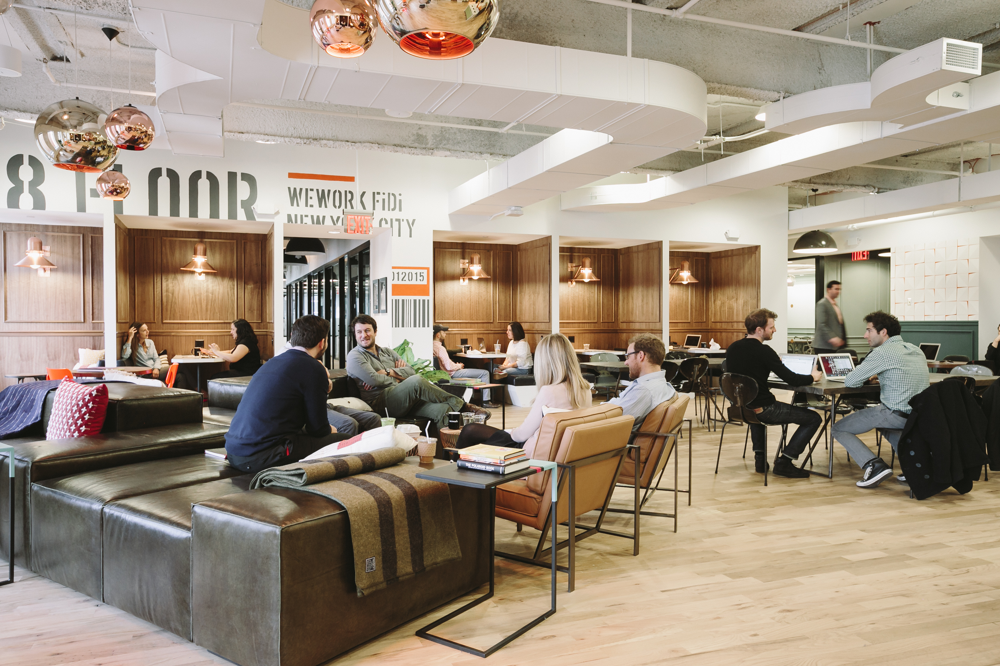
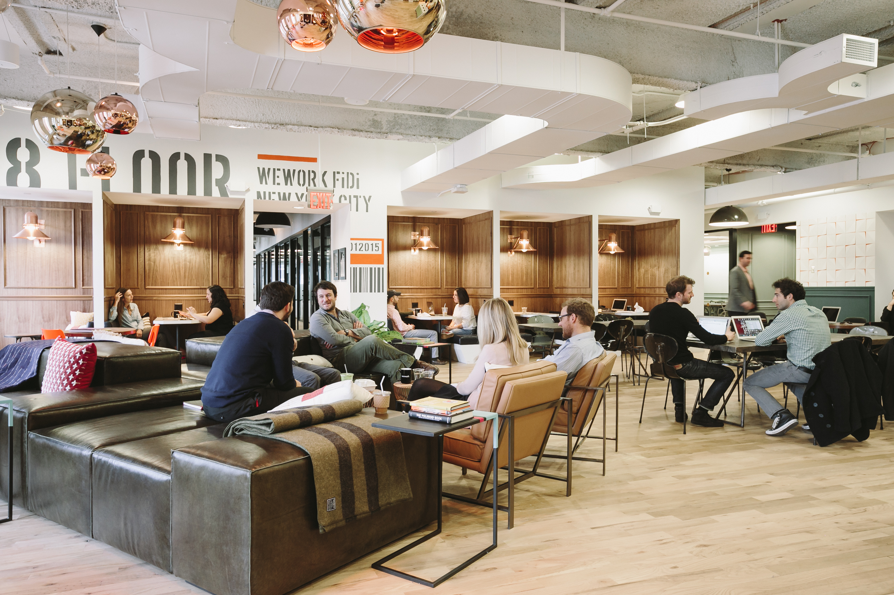

To: WeWork
From: Brianna Roser (broser13@gmail.com)
Subject: Why I Should be Your Junior Email Marketing Associate

|
|---|
|
what drives me |
|
To me, marketing is a functional art. Now, when you think of marketing, “art” may not be the immediate descriptor that comes to mind. That’s normal, so bear with me. There’s no denying that marketing is rooted in business: there are data, strategies, and studies into how best to reach your audience. But finding the right solution involves being creative. It’s not enough to just speak to your audience. You have to form a relationship with them, show them you understand them, and inspire them. The point is to show them why they are so much better off by doing business with you, because they actually are. Helping others to succeed inspires me, and that’s why I want to become WeWork’s new Junior Email Marketing Associate. To learn more about me, please read on. |
|
why i am... |
|
A DO'ER |
|
Since graduating from the University of Pittsburgh in 2016, I have focused on expanding my skillset to better succeed in digital marketing. The skills of which I am proudest are HTML and CSS, which I have studied to the intermediate level. My studies include producing HTML emails as well as static websites from scratch. Additionally, I have experience with Adobe Suite applications, namely Photoshop, InDesign, and Illustrator. I am always dedicated to performing my best work, including learning any skills necessary to succeed. I also am not afraid to get hands-on with a problem until it is solved - in fact, I welcome it. But most importantly, I love creating work that serves a purpose and helps people succeed. Digital marketing does just that. |
|
SOLUTION-CENTRIC |
|
I pride myself on being a creative problem-solver. My ability to analyze problems and find solutions has been improved since learning to code, since whenever the code I’ve written doesn’t work, I have to discover what went wrong. More often than not, its a problem that I’ve never encountered before, so I have to think beyond what I would typically do to solve it. These situations are great because they provide a chance to learn and apply this knowledge later. Similarly, such situations have deepened my attention to detail and organization skills, as both are integral to getting HTML and CSS code to run correctly. Finally, I am deadline-oriented, prioritizing time-sensitive tasks without sacrificing quality of work. |
|
A COLLABORATOR |
|
I thrive when working with a team, because I love getting new solutions and perspectives that I never would have thought of myself. But I also enjoy bringing my own ideas to the group and feeling the satisfaction that comes with my work being incorporated into the project. During my time at Index on Censorship, we had an office-wide meeting each week to discuss our individual projects and give each other input, a practice I valued highly. It helped me go beyond my duties in ways I didn’t think of on my own. Because of that experience, I always welcome constructive criticism on my work. My focus is doing the best work I can and contributing that to the whole. I love working with people and view myself as the ultimate team-member. |

 

|
|
my background |
|
My previous positions have given me the knowledge to succeed at WeWork. I am confident in my writing abilities, which I have grown through several internships. At Index on Censorship, I focused on writing succinct summaries of events we’d organized and updates on current events. During my time at The Pitt News and Politickin, I focused on longer, more detailed pieces. My varied experience is something I am proud of, because I feel capable of taking on any length and voice. I am able to match the brand and style of the organization - The Pitt News was more informal and opinion-based, while Index on Censorship was urgent and had no frills. These positions also developed my analytical and time-management skills, because I had to decide which information should be included and what needed to be prioritized when managing several projects. I also am highly adaptable to office style and team structure. As I stated before, Index on Censorship was focused on bringing individual departments together to serve the whole company. Everyone was allowed to do their own work, but the focus was on the main magazine. At Congressman Rothfus’s office, it was nearly the opposite. Each office member worked completely alone on their cases and rarely needed to collaborate. But the emphasis on the brand was even more important here, because the Congressman’s success in his job - and the entire team’s job stability - depended on maintaining his image. I’ve gained experience in both highly-structured and more individualized teams. What I’ve learned is that teamwork is important in any office, whether in just maintaining the brand or in all aspects of the company. Offices perform better when they work together. Still have questions? I would love to meet with you and speak more in-depth. WeWork’s values and mission inspire me, and I hope to give a little bit of that back to you. |
|
briannaroser
broser13@gmail.com |
You received this email because you advertised for a Junior Email Marketing Associate. Unsubscribe?